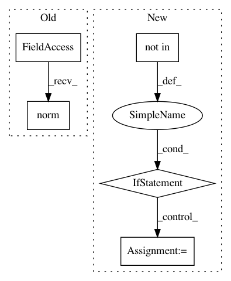

023cdf9007778efc8ccbd937f3f8b9e20ca1d1a2,tests/test_special_orthogonal_group.py,TestSpecialOrthogonalGroupMethods,test_compose,#TestSpecialOrthogonalGroupMethods#,298
Before Change
point)
expected = self.group.regularize(point)
atol = RTOL
norm = np.linalg.norm(expected)
if norm != 0:
atol = RTOL * norm
self.assertTrue(np.allclose(result, expected, atol=atol))
After Change
point)
expected = self.group.regularize(point)
if element_type not in self.angles_close_to_pi:
self.assertTrue(np.allclose(result, expected))
else:
inv_expected = - expected
self.assertTrue(np.allclose(result, expected)
or np.allclose(result, inv_expected))
def test_compose_and_inverse(self):
for point in self.elements.values():
inv_point = self.group.inverse(point)
// Compose transformation by its inverse on the right
In pattern: SUPERPATTERN
Frequency: 3
Non-data size: 5
Instances
Project Name: geomstats/geomstats
Commit Name: 023cdf9007778efc8ccbd937f3f8b9e20ca1d1a2
Time: 2018-02-05
Author: ninamio78@gmail.com
File Name: tests/test_special_orthogonal_group.py
Class Name: TestSpecialOrthogonalGroupMethods
Method Name: test_compose
Project Name: scipy/scipy
Commit Name: 5b3aaf2231fb4da1ad6388c8f79ddd6f07067764
Time: 2015-01-19
Author: pav@iki.fi
File Name: scipy/optimize/_spectral.py
Class Name:
Method Name: _root_df_sane
Project Name: scipy/scipy
Commit Name: b9e2bd64a708ea5daabf000a8a73bf840b935fbb
Time: 2013-05-06
Author: argriffi@ncsu.edu
File Name: scipy/sparse/linalg/_expm_action.py
Class Name:
Method Name: _expm_action_simple